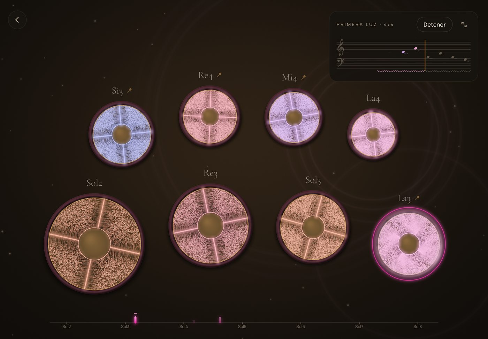
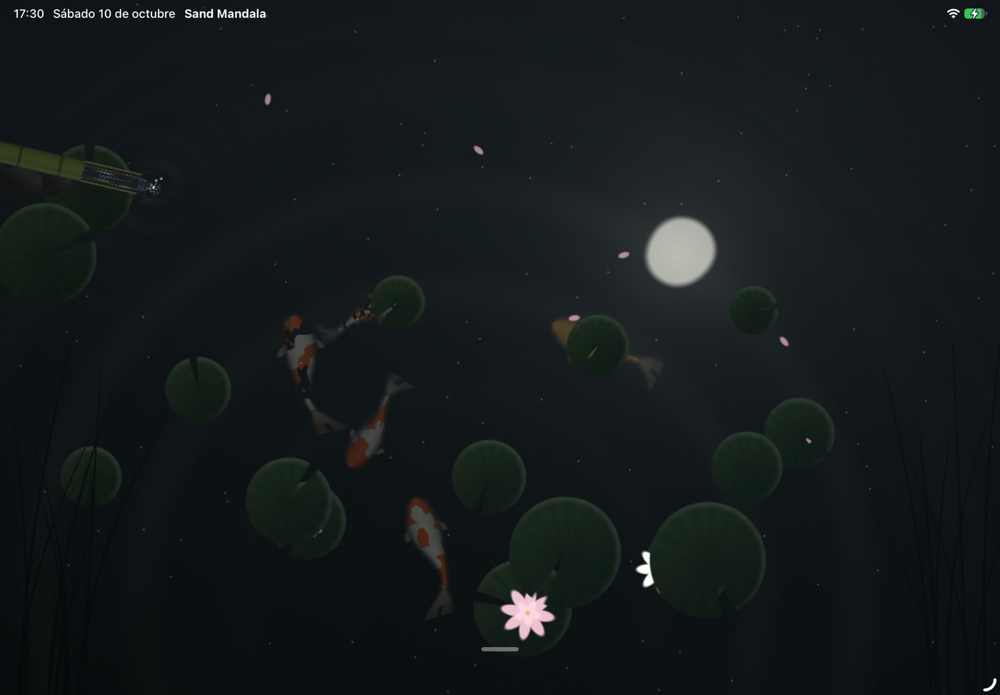
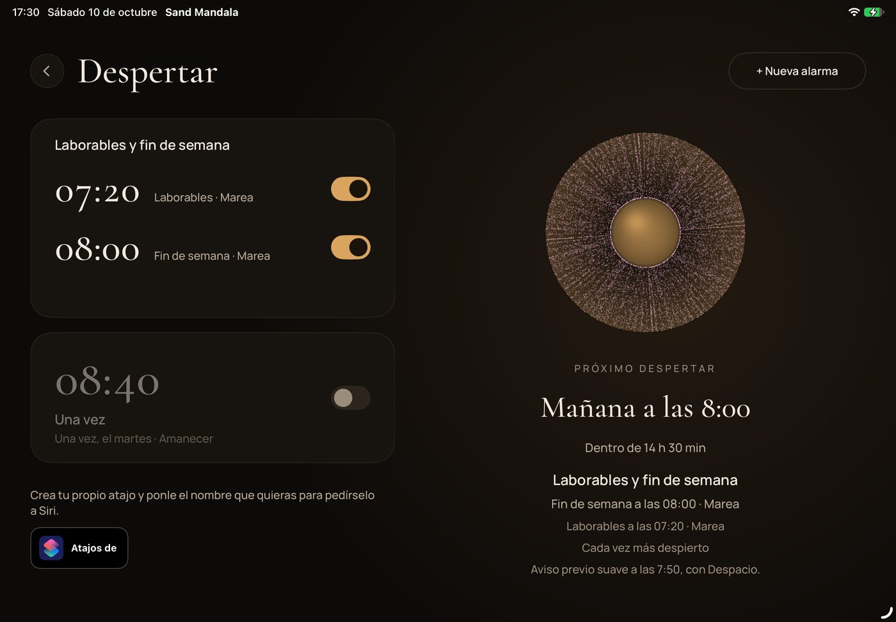

Sand Mandala
Toca · escucha · respira · duerme
Toca un cuenco tibetano y escucha cómo su sonido se abre y se apaga despacio. Sobre él, la arena vibra y dibuja una figura distinta para cada nota: la física real del sonido, hecha visible.
Próximamente en el App Store · iPad



Tocar
Golpea los cuencos suave o fuerte, con fieltro, cuero o madera, o deja que uno cante solo mientras la maza recorre su borde. Graba lo que tocas.
Escuchar
Melodías compuestas para los cuencos: para escucharlas, aprenderlas siguiendo la arena o tocar acompañado. Y «Ver el sonido», para mirar dentro de él.
Respirar y dormir
Escenas de noche que responden a tus cuencos: el mar, la lluvia, un estanque, un bosque de hadas, las ballenas… Y respiran contigo, seis veces por minuto.
Despertar
Alarmas con melodías de cuencos y un amanecer que llega poco a poco. Con Siri, Atajos y widgets.
Gratis, sin anuncios y sin límite de tiempo. Sand Mandala completo, con una sola compra para siempre y compartible con En familia. Sin suscripciones.